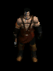
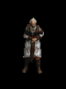
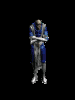
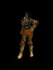
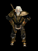

|
|
 |
Deckard Cain
A Horadrim sage, schooled in the most arcane history and lore, who can advise you.
Identify Items - Cain will Identify all of the unidentified Items in your Inventory.
|
 |
Larzuk
Larzuk is a young and passionate firebrand who is determined to stay the course until the bitter
end of the war against Baal. He prides himself in his ability to create the finest implements of
war, and he toils ceaselessly to supply the army with blade, plate, and mail.
Repair - Repair damaged Weapons and Armor for a price.
Trade - Sells Armor, Weapons, Bolts, and Arrows.
|
 |
Malah
Malah is a kind and inherently optimistic woman who is, nevertheless, worn down by many battles
against the forces of evil. Using her lifelong experience as a healer, she is doing her best
to help the many wounded and dying. She is plagued, however, by the fear that there may be no
ultimate recovery for her people or the world of Sanctuary.
Heals - Malah will refill your Life, Mana and Stamina for free.
Trade - Sells Armor, Staves, Wands, Scepters, Tomes, Healing Potions, Potions, Keys, Scrolls.
|
 |
Nihlathak
As the last surviving clan elder, he has been driven close to madness by his grief over the
imminent failure of his clan to protect the Worldstone. Constantly ruminating on the myriad
alternate courses the elders could have taken, he lives with the guilt of not dying with his
peers.
Gamble - For a price, Nihlathak will sell you an unidentified item. Once purchased, the item
will be identified and you will see what item you received. For more on Gambling go
here.
|
 |
Anya
Anya, the daughter of a clan elder slain by Baal, has been groomed since birth to become the
leader of her people. She has a broad education in the history, magic and healing techniques
of her clan. Although she grieves for her father in her heart, she knows that she must be
strong for her people in this time of need.
Trade - Sells Armor, Weapons (Katars, Throwing Weapons), Keys and Arrows
Gamble - For a price, Anya will sell you an unidentified item. Once purchased, the item
will be identified and you will see what item you received. For more on Gambling go
here.
|
 |
Qual-Kehk
Although tired and battered, the clan's Master at Arms still commands the unquestioning respect
of his men. His eyes are grimly focused on the horizon, and he has the wistful demeanor of a man
who knows he will soon sacrifice his life -- and those of his men -- in a battle that he may not win.
Hire - Allows you to hire
Barbarians. For more
information on Hirelings go here.
|
 |
Tyrael
The Archangel Tyrael. Tyrael has always been our protector, but even he cannot help us now.
|
Online Privacy Policy
Battle.net Terms of Use Agreement
©2019 Blizzard Entertainment. All rights reserved.
|
|
|